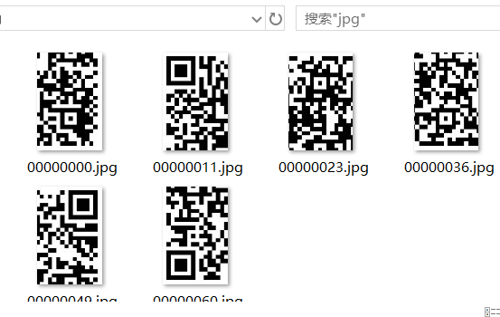

奇怪的TTL
题目描述：
我们截获了一些IP数据报，发现报文头中的TTL值特别可疑，怀疑是通信方嵌入了数据到TTL，我们将这些TTL值提取了出来，你能看出什么端倪吗？
1、数据整理
附件中给了个文件,发现ttl.txt中的ttl只有4个值63,127,191,255，写出他们的二进制表示后发现只有最高两位不同，把前两位提取出来，然后十六进制转字符串，发现所有字符串都是19,af之间,然后自然考虑这是又是十六进制，然后写入文件中。发现写出来的16进制数开头是ffd8,打开是这样的
万物皆可binwalk 放在linux下binwalk分离到6张残图
foremost 或者binwalk -e得到

扫描得到
key:AutomaticKey cipher:fftu{2028mb39927wn1f96o6e12z03j58002p}2、然后开始入坑
一开始以为是维吉尼亚加密，这里解释一下维吉尼亚加密
维吉尼亚密码(Vigenère Cipher)是在单一恺撒密码的基础上扩展出多表代换密码，根据密钥(当密钥长度小于明文长度时可以循环使用)来决定用哪一行的密表来进行替换，以此来对抗字频统计
明文：THE QUICK BROWN FOX JUMPS OVER THE LAZY DOG
密钥(循环使用)：CULTURE
加密过程：如果第一行为明文字母，第一列为密钥字母，那么明文字母'T'列和密钥字母'C'行的交点就是密文字母'V'，以此类推。
密文：VBP JOZGM VCHQE JQR UNGGW QPPK NYI NUKR XFK然后拿着本题的密钥和密文去解密，得到答案然后gg 其实是AutoKey Cipher，人家在题目里都提示了，只能怪自己太死脑筋和孤陋寡闻
其实是AutoKey Cipher，人家在题目里都提示了，只能怪自己太死脑筋和孤陋寡闻
3、啥·是AutoKey Cipher
其实原理和维吉尼亚基本一致的，但是维吉尼亚当密钥长度小于明文，将会循环使用密钥，而Autokey Cipher当密钥长度不足时，将会开始使用明文的第一个字母开始附加在密钥上。
在本题的体现是密钥12位，而密文中字母有14哥所以最后两个需要拿f l 替换
AutoKey Cipher在线加解密
4、使用Python3解密
AutoKey Cipher
>>> from pycipher import Autokey
>>> Autokey('AutomaticKey').decipher('fftu{2028mb39927wn1f96o6e12z03j58002p}')
'FLAGABDFDEABEE'
>>> Autokey('AutomaticKey').encipher('FLAGABDFDEABEE')
'FFTUMBWNFOEZJP'Vigenere
>>>from pycipher import Vigenere
>>>Vigenere('CULTURE').encipher('THE QUICK BROWN FOX JUMPS OVER THE LAZY DOG')
'VBPJOZGMVCHQEJQRUNGGWQPPKNYINUKRXFK'
>>>Vigenere('CULTURE').decipher('VBPJOZGMVCHQEJQRUNGGWQPPKNYINUKRXFK'
'THEQUICKBROWNFOXJUMPSOVERTHELAZYDOG'![PHP超级全局变量以及['PHP_SELF']的跨站脚本攻击](/medias/featureimages/8.jpg)